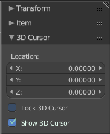
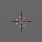
The 3D Cursor is simply a point in 3D space which can be used for a number of purposes. It is often in the way. You can hide it in the properties sidebar in the 3D Cursor panel at the right.
The 3D View editor is the editor where you edit your 3D data. Here you can display and modify all the scene data like meshes, curves, metalballs, etc.
It has a grid overlay in the middle per default, and you can navigate around in this view with your mouse.
Each part of this editor will be explained in their own individual chapter.
In this chapter you will find general GUI information that doesn't fit elsewhere.
The 3D View has several areas highlighted with colour overlays:
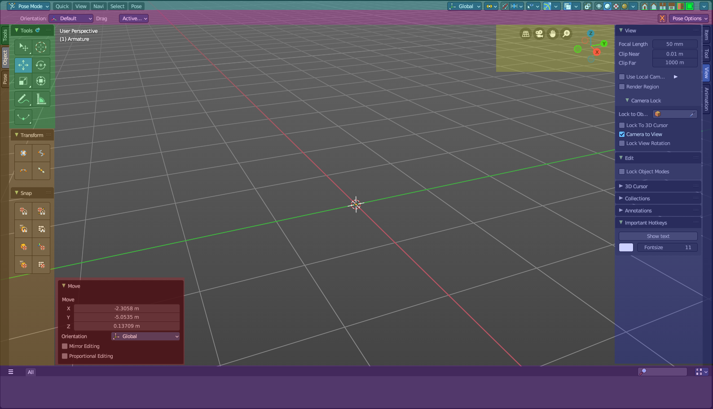
In the center is the actual 3D viewport. Here you see and modify your mesh data as an example.
A. Header
The light blue area is the Header. This area contains menus, viewport settings, tools and settings.
B. Tool Settings
The pink area at the top is the Tool Settings. Here you can find settings for the currently active tool and viewport options.
C. Toolbar
The green area at the left is the Tool Shelf. This contains all the modal tools.
D. Tabbed Toolbar
The orange area are additional optional tabs and panels with act-once tools also found in the header.
E. Sidebar
The dark blue area to the right is the Sidebar. This contains settings and transform values. This is also the place where addons add their additional panels.
F. Asset Shelf
The purple area to the botton is the Asset Shelf. Here you can quickly access asset library assets from the 3D Viewport.
G. Adjust Last Operator Panel
The red area at the bottom left you is the Adjust Last Operation panel. This panel appears after you do an operation, like move the mesh to another location, and allows you to adjust the values for the operation afterwards.
H. Navigation Widgets
The yellow area is the navigation widgets.
Viewport Navigation
Navigation in the viewport happens mainly by mouse or hotkeys. Some of them does not have a menu entry. And needs to be explained here.
For the rest of the available navigation functionality have a look into the Navi menu in the header.
Navigation Elements
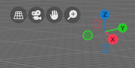
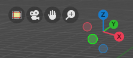
From left to right.
| Entry | What it does |
|---|---|
| Perspective / Orthographic | Switch the view between perspectivic and orthographic view. |
| Camera View | Enter and leave the camera view. You need to have an active camera in the scene. |
| Move | Moves the view. |
| Zoom | Zooms in and out. |
Mini Axis
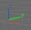
A mini axis. It allows rotation of the view and snap to the nearest ortho view when it is in interactive navigation mode. See Viewport gizmos for more options. There you can turn it to a simple widget, or turn it even completely off.
Lock camera to view
Available when you are in camera view. Either navigate the passepartout around the camera, or navigate in the camera view.
Viewport navigation hotkeys
Right mouse button rotates the view.
Middle mouse button pans the view.
Holding Ctrl + MMB zooms the view.
Scroll Wheel zooms the view.
Holding down Alt and middle mouse button snaps the view to the next available orthographic view. Front, Left, etc. . When you continue dragging then you continue to the next orthographic view.
Numpad * resets the 3D view.
Left clicking into an empty space deselects what is currently selected. Exception: when you are in one of the navigation modes and drag the mouse, then the navigation takes over.
| Entry | What it does |
|---|---|
| Object navigation | Hotkey W moves the selected object/s Hotkey E rotates the selected object/s Hotkey R scales the selected object/s |
| Trackball Navigation | Pressing the hotkey for object rotation once (by default the E key in the Bforartists key map) will rotate the object around the screen axis. Pressing the hotkey for rotation twice will activate trackball rotation. Now you can rotate the object freely around all three axis. |
Context Menus
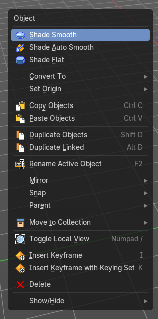
Not every functionality has a menu entry. Some is hotkey only.
One of it is calling the so called context menu. You will find it in several places in the UI. Normally it's a simple right click in the viewport.
The content of this menus is to 100% double content to already existing menus. And it is, despite the name, not contextual. The different menu types comes from the object modes, not from a context.
The single context menus are described in their own chapters in the corresponding editors.
Right click Menus

Not every functionality has a menu entry. Some is even a right click at an existing menu. Like clicking at an operator or a property in the UI to add it to the quick favourites menu or to add a shortcut.
Note that not all right click menu functionality might be documented.
Add to selection with Shift
When you want to parent two objects together, then you need to select them. You can do this with border select for example. Or you select the first object, hold down shift, then the second object. The first object selected will be the child object then when you parent them together.
Constraining the scaling axis (axis locking)
Scaling can be constrained to a particular axis or axes through the use of Axis Locking. To constrain scaling, the following shortcuts can be used:
- Scale Hotkey, X: Scale only along the X Axis
- Scale Hotkey, Y: Scale only along the Y Axis
- Scale Hotkey, Z: Scale only along the Z Axis
Axis locking can also be enabled by pressing the MMB after enabling scaling and moving the mouse in the desired direction e.g.
- Scale Hotkey, move the mouse along the X axis, MMB: Scale only along the X Axis
Object Snapping with Increment snap
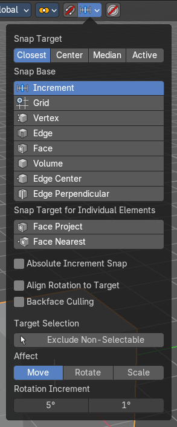
Holding Ctrl during a transform operation (such as grab, rotate or scale) will temporary activate Transform Snapping. When the Snap Element is set to Increment, this allows the transformation to be performed in fixed steps.
Slider snapping

Snapping also works at sliders for example. Hover with the mouse over the slider, start to slide, and holding down Ctrl will snap the sliders in incremental steps.
When it's a default value between 0 and 1 then it usually snaps in 0.1 steps. When it's a default value over 1 then it usually snaps in steps of 10.
Note that this also works at brushes hotkeys for example. Hotkey F usually allows to change the radius. When you hold down ctrl too then it increases or decreases the size by incremental steps.
Fine tuning Transform
Holding Shift during a transform operation will transform the object at 1/10th the speed, allowing much finer control over the snapping.
The magnitude of the transformation can be viewed in the 3D window header in the bottom left hand corner. Releasing Ctrl or Shift during the transformation will cause the movement to revert back to its normal mode of operation.
This fine tune transform operation works with both, the transform hotkeys and the 3D widget.
Tip: Combining with other controls
All of the precision controls detailed on the page can be combined with the Axis Locking controls and used with the different Pivot Points.
Rotation transformations
Holding Ctrl will cause rotations of 5 degrees.
Holding Ctrl + Shift will cause rotations of 1 degree.
Scale transformations
Holding Ctrl will cause size changes in increments of 0.1 BU.
Hold Shift down while scaling to scale the selected element in very fine increments.
Hold Shift + Ctrl down while scaling to scale the selected element in 0.01 BU increments.
Tip: Orientation dependent scaling
By default, all scaling happens around a Global Orientation. You can change the scaling orientation by pressing the axis key twice. For example, pressing S, X, X will by default set scaling to occur around the local orientation in X direction. Note: Snapping modes
Note that if you have a Snap Element option enabled, holding Ctrl will cause the selection to snap to the nearest element.
Numeric input for Transform
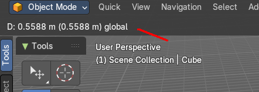
Using the mouse for transformations is convenient. But if you require more precise control, then you can also enter numeric values. After pressing one of the navigation hotkeys, type a number to indicate the magnitude of the transformation.
You can see the numbers you enter in the bottom left hand corner of the 3D window header. Negative numbers and decimals can be entered by pressing the minus (Minus) and period (.) keys respectively.
The process is the same for translation, rotation and scale. Press the corresponding navigation hotkey, the header will show the values, then type in the values that you need. And finally left click or press enter to confirm. A right click abandons the operation.
For translation you have to define the axis in which you want to translate. So when you want to translate your object in X axis to 10, then press the translation hotkey, then type in X 10. And the object will arrive at X position 10. Keep in mind that pressing the navigation hotkey twice will work in local orientation.
Placement
There are various methods to place this 3D cursor, including some snapping methods.
The free placement method with a hotkey is with Alt + RMB with the default Bforartists key map.
Hotkey only functionality
Important: These hotkeys works with the default Bforartists key map! And they do not list the Ndof hotkeys. Ndof is a 3d connexion mouse device that is also used for tablets.
Most of the tools can be found in the graphical UI. But there are still some tools that are hotkey only. Some have a UI brother with equal functionality. For example, Pick shortest path is the hotkey sister of Select shortest path. Some are hotkey only since they cannot be integrated in the graphical UI. Like calling the File menu under the mouse. Or mouse position dependent functionality like selecting an edge loop.
The navigation hotkeys and the context menus are excluded here since they are already covered.
File Menu - F4
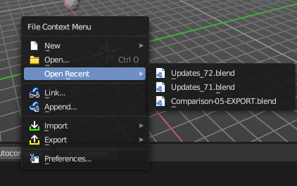
Calls the file menu under the mouse.
| Entry | What it does |
|---|---|
| Set 3D Cursor - Alt Right Mouse | Sets the 3D cursor position to Mouse position. |
| Frame All - Ctrl Home | View all objects in the scene in all regions. This hotkey is for quad view. |
| Frame All - Shift C | View and center all objects in the scene. |
Pivot Point Pie menu - ` (german keyboard . )
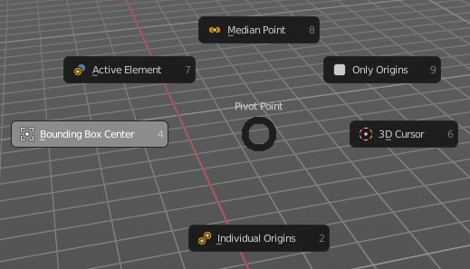
Calls a pivot point pie menu. The content is the same than in the pivot menu in the header.
Call the Snap Pie menu - Shift E
Calls the Snap Pie Menu.
Interactive Light Track to Cursor - Shift T
Navigate a lamp of type sun or spot light to point at objects. The lamp follows the mouse cursor.
| Entry | What it does |
|---|---|
| Call pivot pie menu - . | Call pivot pie menu. |
| Call orientation pie menu - , | Call orientation pie menu. |
Cycle through select method - Shift Q
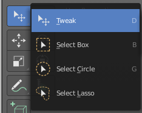
Cycle through the select method in the tool shelf.
Toggle Viewport Gizmos - Tab
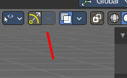
Toggles the display of the viewport gizmos.
Loop Select - Alt Left Mouse
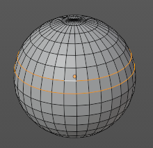
Selects an edge loop.
Loop Select - Shift Alt Left Mouse
Selects an edge loop., adds to selection.
Edge Ring Select - Ctrl Alt Left Mouse
Selects a ring loop.
Edge Ring Select - Shift Ctrl Alt Left Mouse
Selects a ring loop, adds to selection.
Pick shortest path - Ctrl Left Mouse
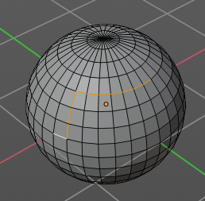
Mesh Object in Edit mode.
Pick the shortest path by selecting the first element, holding down ctrl, then selecting the last element.
Last Operator Pick shortest path
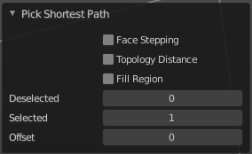
Face Stepping
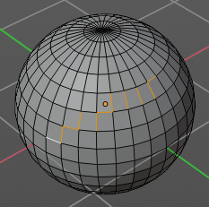
Traverse connected faces.
Topology Distance
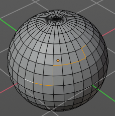
Find the minimum number of steps instead of the shortest distance.
Fill Region
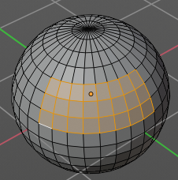
Select the region faces too.
Deselected
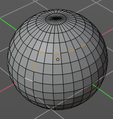
Don't select the whole path, but just every nth element of it.
| Entry | What it does |
|---|---|
| Skip | This is connected to nth element. Number of elements to skip at once. |
| Offset | This is connected to nth element. Start with an offset. |
Curve Object, Add Vertex - Ctrl Right mouse
Edit Mode. Adds a duplicate of the selected curve points under the mouse.
Armature Object, Extrude Forked - Shift S
Edit Mode. Extrudes with option Forked enabled. Bones extrudes from the center of the selected joints.
Armature Object, Click Extrude - Ctrl Right mouse
Edit Mode. Extrudes the bone to mouse position.
Armature Object, Set Rotation Mode - Alt R
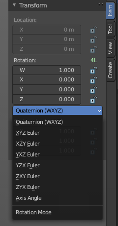
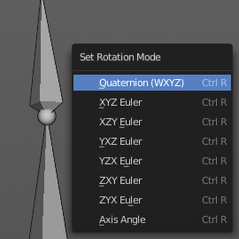
Pose Mode. Calls a menu under the mouse to set the rotation mode of the selected bone(s). The same menu is also in the Transform panel in the Item tab.
Stencil Brush Control Hotkeys
This is for the paint modes where you have a stencil map available. Vertex Paint and Texture Paint. They move, rotate and scale the stencil image. There are two possible sets. A texture stencil map. And a mask stencil map.
Texture set:
Alt Right Mouse
Shift Right Mouse
Ctrl Right Mouse
Mask set:
Shift Ctrl Alt Right Mouse
Shift Alt Right Mouse
Ctrl Alt Right Mouse
Radial Control
In Paint modes you can set the strength or radius of the brush not only by the sliders. But also by hotkeys.
Sets the brush radius - F
Sets the brush strength - Shift F
Sets the brush direction - Ctrl F
Sets the brush direction - Ctrl Alt F
Face sets edit
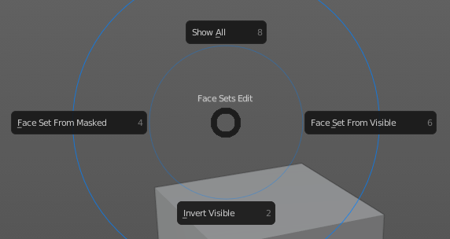
Sculpt mode. Calls a pie menu to set the face sets.
Mask Expand
Sculpt mode. Expands a Face mask.
Edit Voxel Size
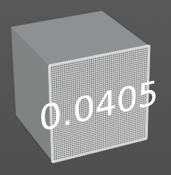
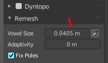
Sculpt mode. Shows a grid and allows you to adjust the voxel resolution for remeshing. The slider in the remesh panel does not show the grid.